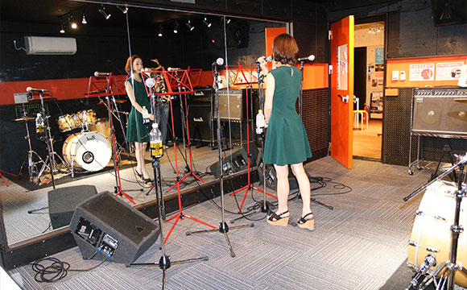
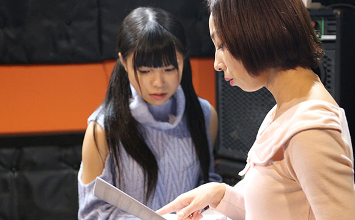

- TOP
- 講師紹介
福岡のボイストレーナー・沖島ゆきのご紹介
～Pure breed（ピュア ブリード）代表・講師紹介～
福岡県の「Vocal school Pure breed（ピュア ブリード）」は、福岡県田川郡福智町、福岡市中央区天神、北九州市小倉北区に4つの教室を展開するボーカルスクール（ボイストレーニング教室）です。ここでは、代表でありボイストレーナーである沖島ゆきからのメッセージです。
あなたの夢を叶えるボイストレーニングをご提供します～沖島行き からごあいさつ～
メッセージ
はじめまして、Vocal school Pure breed（ボーカルスクール ピュアブリード）の代表で、ボイストレーナーを務める沖島ゆきです。
Pure breedやボイストレーニングに興味を持ってくださる皆様は、目標や目的は違えど、「歌が上手くなりたい」と思う気持ちは同じだと思います。私もかつて、皆様と同じように「歌が上手くなりたい」と思い、スクールに通ってボイストレーニングを受けました。これをきっかけに、私の人生は大きく変わったと思います。

ボイストレーニングのおかげで、それまでに出会うことのなかったような方々と出会い、たくさんの舞台にも立つ機会にも恵まれました。いろいろなお仕事をさせていただいた経験から、世界がずいぶんと広がりました。ボイストレーニングで得たものは、今の私にとって、かけがえのない財産となっています。
今は、私がこれまでに経験してきたことを、誰かの夢を叶えるきっかけとして、お手伝いしていくことができたらと想い、Pure breedというボイストレーニングスクールを運営しています。
ほとんどの方が、ボイストレーニング教室＝歌唱力を養う場所だと思われるかもしれませんが、Pure breedは少し違います。もちろん、カラオケが上手くなりたいという生徒さんには、カラオケでその生徒さんの魅力を最大限に引き出し、生徒さんが必要とするテクニックについてしっかりとお伝えします。それらもとても大切なことです。
一方で、これからプロを目指したいという方には、プロとしての思考や、心と身体のバランスについて、歌唱力以外の部分についても、私がプロとして知りうるあらゆることをお伝えしています。また、自分中心に物事を考えてしまう人は、人々に感動を与えることのできる存在にはなれません。周囲の方の支えがあってこそ、アーティストは自分の才能を発揮することができます。人への感謝の気持ちを忘れない――、そういった人として大切な姿勢や、メンタル面でもプロフェッショナルに求められるものをお伝えしていきます。

Vocal school Pure breed（ボーカルスクール ピュアブリード）は、趣味で歌を歌いたい方からプロ志望の方まで、一人ひとりの生徒さんの可能性や夢を一緒に追求していく、そんなスクールです。無料体験レッスンやオンラインレッスンにも対応しています。ボイストレーニングや歌うことに興味があるなら、どうぞお気軽にお問い合わせください。皆様と出会える日を心よりお待ちしています！
生年月日
1985年3月8日
プロフィール
Vocal school Pure breed（ボーカルスクール ピュアブリード）代表・ボイストレーナー
高校時代から福岡と東京を行き来し、様々な音楽関係者と知り合い、ラジオパーソナリティー・司会・ピアニスト・モデル・ダンサーなど多才な活躍を見せる。J-POPはじめ、R&B・ROCK・reggae・演歌・classic・blues・gospel・JAZZなど、音楽ジャンルを問わない幅広い経験から、現在はボイストレーナーとして後進の育成に積極的に取り組んでいる。
活動実績
ラジオFM kitaQ パーソナリティー
出演
CM会社CMソング オファー
ストリートライブIN北九州 出演
新北九州空港開港イベント 出演
TOTO桜祭りゲスト出演
積水ハウス忘年会ゲスト出演
北九州芸術祭 出演
マリナタウン 出演
黒崎井筒屋 秋の文化祭 出演
西南女学院大学 学園祭 出演
産業医科大学 学園祭 出演
キャンドルナイト2010in久留米 司会
JRが生まれ変わって10周年記念イベント 出演
ハーティファミリーフェスタ ゲスト出演
北九州CLUB Locomix ゲスト出演
北九州市子供料理王選手権 ゲスト出演
BRICK HALL クリスマスイベント ゲスト出演
宮地嶽神社出演
福岡サンパレス出演
福岡CLUB MARS・glam cafe・infinity出演
イベント『GLITTER』主催
ボーカルコンテスト企画・主催
北九州市タウン情報誌『おい街』 掲載
筑豊地区フリーペーパー『CHIKUSUKI』 掲載
イオン若松 タワレコ発「ビーグルクルー」「HOWL」「からもも」など多数アーティストMC
全国誌 学研CAPA モデル 2012年８月号『マッケンラブ・マッケンラブ・フォト賞』受賞
全国誌 学研CAPA モデル 2012年ポートレートセッション年間発表『トランセンド賞』受賞 etc......
信条
継続は力なり
信じるものは救われる
メディア掲載情報
雑誌「リンネル」 2021年1月号に掲載されました